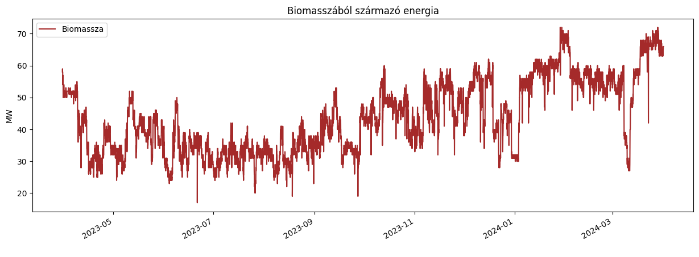
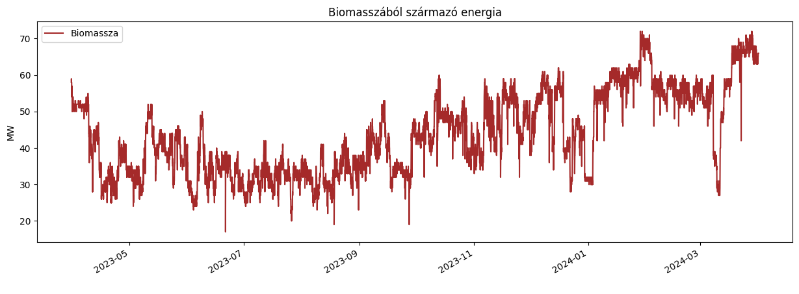

Hogyan alakult Románia áramtermelése és -fogyasztása 2019-2024 között?

Ahogy látható az országban nem mindig van átfedés az előállított mennyiség és a fogyasztás között, ami azt jelenti, hogy vannak napok amikor túltermelés áll fenn és olyanok is előfordulnak amikor a szükségesnél kevesebb kerül előállításra.


 
